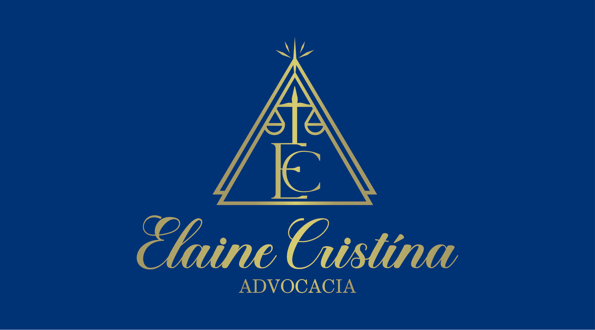

Divórcio Extrajudicial
Orientação jurídica para casais que já estão de acordo e querem formalizar o divórcio com segurança — em cartório, quando o caso preenche os requisitos legais.
Leva menos de 2 minutos. A pré-análise é inicial e não substitui a orientação jurídica individualizada.
Cada situação familiar tem suas próprias particularidades.
Descubra em minutos os pontos que precisam ser verificados no seu caso.
Inclusive sobre mudanças recentes do CNJ, como a de 2024 sobre filhos menores.
Sobre a advogada
Advogada inscrita na OAB/SP sob o nº 215.743, com atuação em Direito de Família. Atendimento individualizado, com análise cuidadosa de cada caso antes de qualquer orientação, no escritório em Vila Nova Curuçá, São Paulo/SP.
Sem modelo pronto — cada caso é analisado por conta própria.
Atuação alinhada às normas mais recentes do CNJ e da OAB.
Dra. Elaine Cristina
Áreas de atuação
Atuação inicial concentrada em três frentes, com foco em atos extrajudiciais e orientação previdenciária.
Divórcios consensuais realizados em cartório, quando preenchidos os requisitos legais, com orientação jurídica completa.
Fazer pré-análise →Inventários amigáveis e consensuais realizados em cartório, quando juridicamente possível.
Falar com a advocacia →Aposentadorias, planejamento e análise previdenciária, aposentadoria especial e questões de benefícios.
Falar com a advocacia →Passo a passo
A Dra. Elaine entende a situação do casal e verifica os requisitos aplicáveis ao caso.
Bens, eventual pensão entre os cônjuges, nome e demais pontos que precisam constar do acordo.
Organização de tudo o que é necessário para dar entrada no procedimento.
Com os requisitos e a documentação prontos, o divórcio é formalizado por escritura pública no Tabelionato de Notas.
Comece agora
Responda 3 perguntas e descubra quais pontos do seu caso precisam ser analisados — leva menos de 2 minutos.
Antes de começar
Isso depende das características do caso — por isso vale verificar antes de decidir por onde começar.
O que fazemos
Antes de qualquer orientação, esses são os pontos que entram na análise do seu divórcio.
Analisador de Divórcio Extrajudicial
Responda 3 perguntas simples e receba uma orientação inicial sobre os pontos que precisam ser analisados no seu caso.
Sua análise inicial está pronta
Para ver o resultado e receber orientação sobre os próximos passos, informe seus dados.
A lista pode variar conforme a situação do casal. Depois da análise inicial, vocês recebem a lista específica para o seu caso.
Mesmo sendo um procedimento extrajudicial, a assistência de advogado é obrigatória por lei. O papel do advogado não é só assinar: é orientar o casal, explicar as consequências jurídicas do que está sendo acordado e ajudar a preparar os termos da escritura.
Quem vai te orientar
Advogada · Direito de Família
Elaine Cristina Alves de Souza — OAB/SP 215.743. Atendimento individualizado no escritório em Vila Nova Curuçá, São Paulo/SP, presencial e online.
Por que escolher
Cada situação familiar tem suas próprias particularidades.
Sem juridiquês, explicação objetiva do procedimento e dos requisitos.
Conferência do que é necessário antes de qualquer promessa.
Inclusive sobre mudanças recentes do CNJ, como a de 2024 sobre filhos menores.
“O objetivo é dar segurança jurídica para uma decisão importante — com clareza sobre o que pode e o que precisa ser analisado em cada caso, sem promessas vazias.”Dra. Elaine Cristina OAB/SP 215.743
Para entender melhor
Conteúdo informativo — não substitui a orientação jurídica sobre o seu caso específico.
Entenda o que muda em relação ao divórcio judicial e quando essa via se aplica.
O que mudou desde 2024 sobre divórcio extrajudicial com filhos menores ou incapazes.
A lista costuma variar por caso — veja o que geralmente é solicitado.
Dúvidas frequentes
É o divórcio formalizado por escritura pública em cartório, sem processo judicial, quando o casal está de acordo e o caso preenche os requisitos legais — sempre com assistência de advogado.
Sim. A lei exige assistência de advogado em qualquer divórcio extrajudicial, mesmo sendo feito em cartório.
Depende do caso: consenso entre os dois, situação dos filhos (se houver), bens e demais requisitos legais. A pré-análise nesta página ajuda a entender os pontos do seu caso específico.
Em muitos casos sim. Desde 2024, o CNJ passa a admitir hipóteses de divórcio extrajudicial com filhos menores ou incapazes quando guarda, convivência e alimentos já foram resolvidos judicialmente.
Para a via extrajudicial, sim — é um procedimento consensual. Se ainda não há acordo total, é possível entender qual caminho jurídico se aplica ao seu momento.
Sim, desde que exista acordo sobre a partilha ou que ela seja definida no processo de formalização.
Depende do caso e do que o casal decidir. Isso é analisado junto com o regime de bens do casamento.
Sim, isso pode ser definido dentro da própria escritura de divórcio.
Varia conforme o caso — a lista completa é confirmada depois da análise inicial.
Se a análise mostrar que a via extrajudicial não se aplica, a orientação segue para a alternativa jurídica adequada ao seu caso — o atendimento não termina aí.